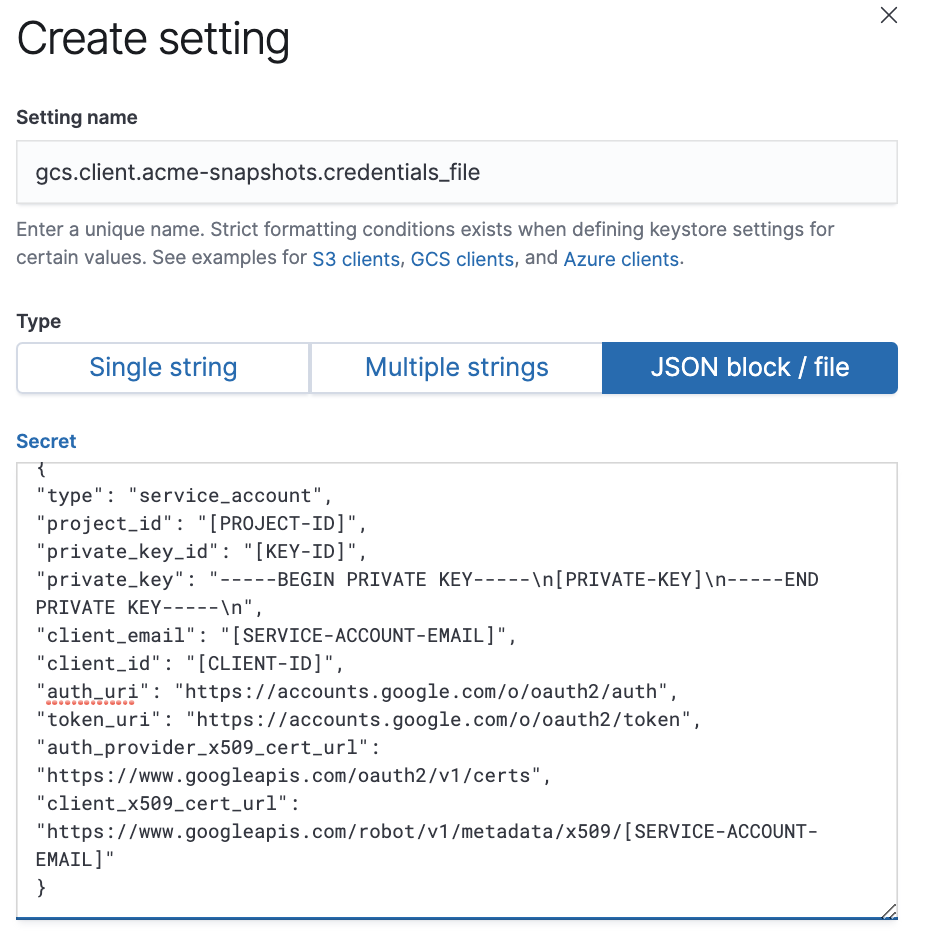

Snapshotting to Google Cloud Storage (GCS) for Elasticsearch 6.4 - 6.8edit
This is a workaround for Elasticsearch clusters at version 6.4 to 6.8. If you are using an earlier Elasticsearch version you must upgrade first. Snapshotting to GCS repositories is natively supported in Elastic Cloud Enterprise beginning with version 7.0.
Snapshots to GCS are supported using an advanced repository configuration and service account credentials that can administer your GCS bucket.
Set up your service account credentialsedit
You’ll need to have an existing Google Cloud account and have the appropriate permissions to generate credentials:
-
Create service account credentials in your Google Cloud project where Elastic Cloud Enterprise is running.
The service account should be granted the role of
storage.adminso that Elasticsearch clusters can read, write, and list the bucket objects. - Save the service account key in JSON file format. You are going to use it later to configure your Elasticsearch deployment for snapshotting.
Add the GCS repositoryedit
Add your Google Cloud Storage bucket as a repository to the platform:
- Log into the Cloud UI.
-
Go to Platform > Repositories and add the following snapshot repository configuration under the advanced mode:
Repository GCS (see: supported settings)
{ "type": "gcs", "settings": { "bucket": "acme-snapshot-repo", "client": "acme-snapshots" } }
Snapshots are stored in the bucket you provide. Use the client name you define here to configure your Elasticsearch clusters for snapshotting to this repository.
Configure your deployment for GCS snapshotsedit
To save deployment snapshots to the custom GCS repository:
-
Create or use an existing deployment with an Elasticsearch cluster that has the
repository-gcsplugin enabled. -
Add a secure setting named
gcs.client.acme-snapshots.credentials_fileas a JSON block. Make sure that the client name is the same one you provided when configuring the snapshot repository.The Secret field should be the service account key in JSON format created in your GCP project:
 - Configure your deployment to snapshot to the GCS repository.
After you enable snapshots, snapshotting will begin within 30 minutes (the default snapshot interval).